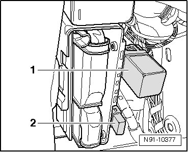

Power Protection Relay: Description and Operation
Voltage Monitoring Fuse and Relay
The multimedia system fuse is installed in the right rear of the luggage compartment behind the cover.
The voltage monitoring relay is installed in the same location. If voltage is below 10.7 Volt, the multimedia system is switched off by the voltage monitoring relay. When ignition is switched off and multimedia is system switched on, system is switched off by voltage monitoring relay after approximately 20 minutes.
Both measures serve to protect the vehicle battery from discharging and prevent multimedia system malfunctions due to low voltage.

1 Voltage monitoring relay
2 Multimedia system fuse (5 Ampere)